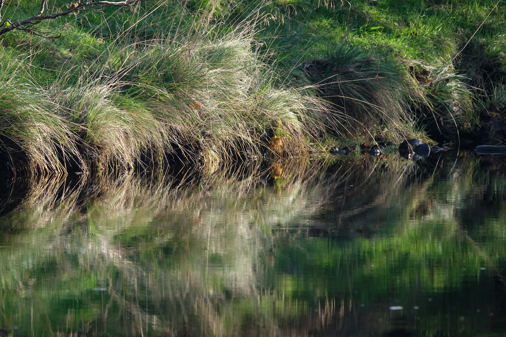
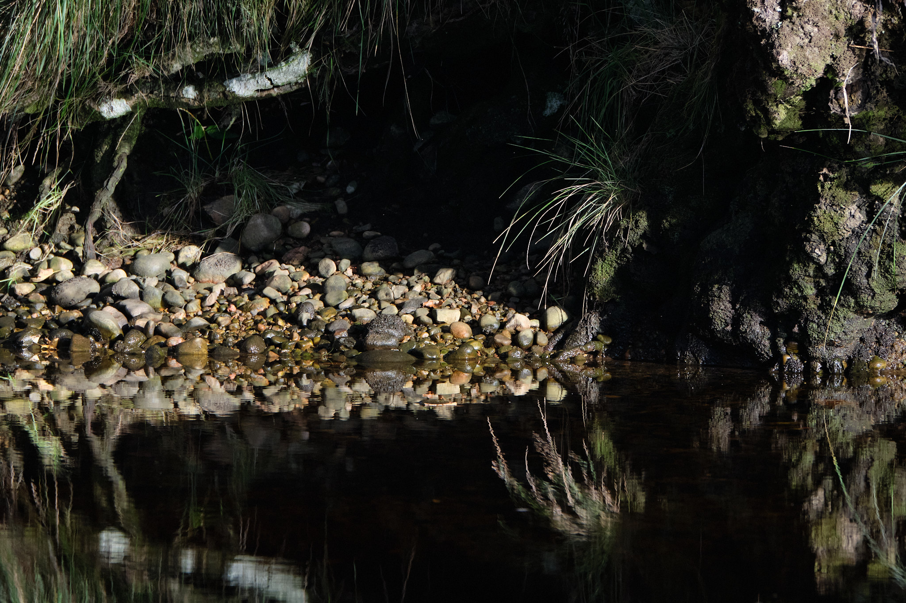
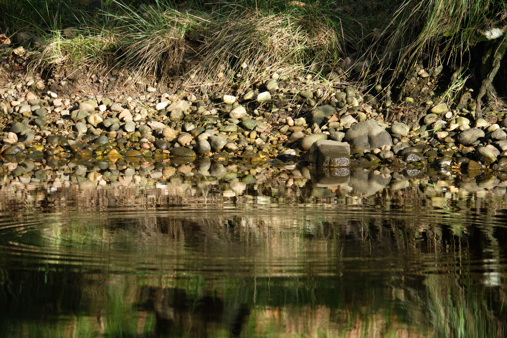
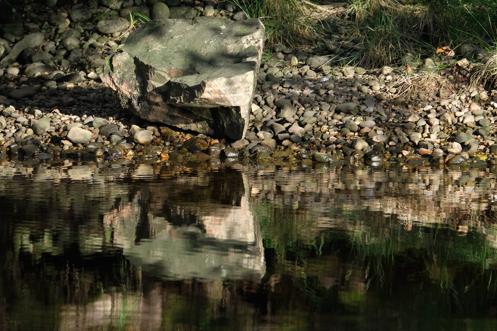
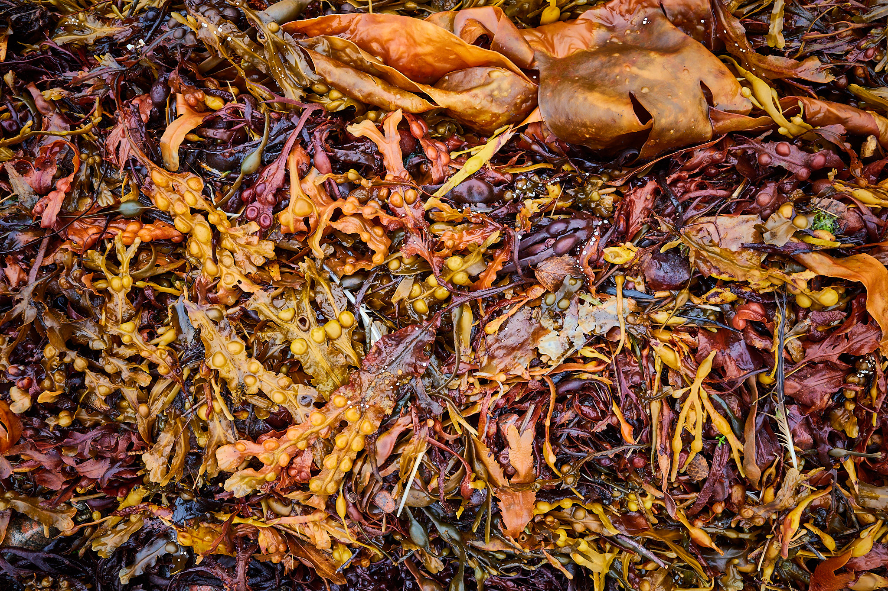
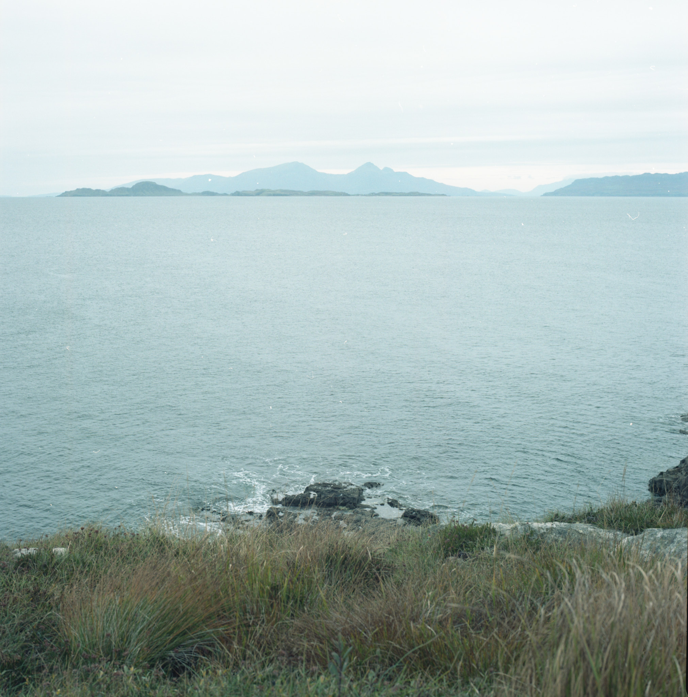
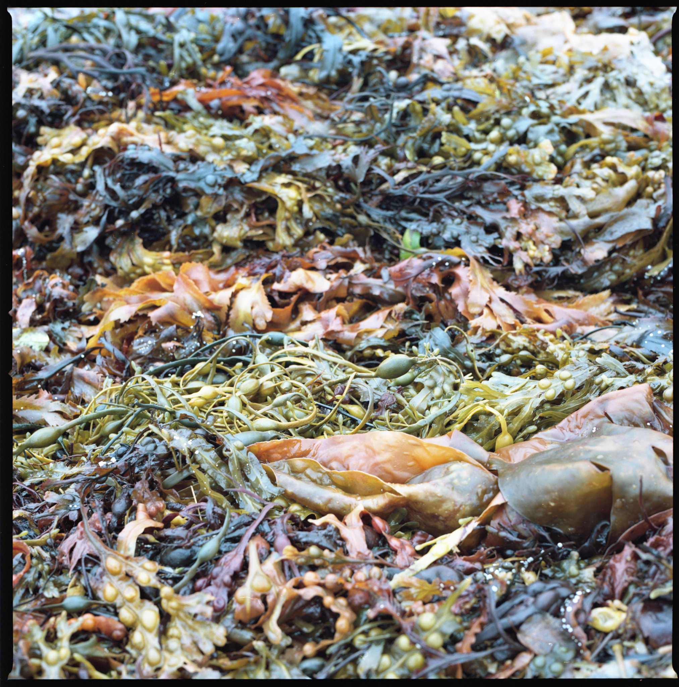
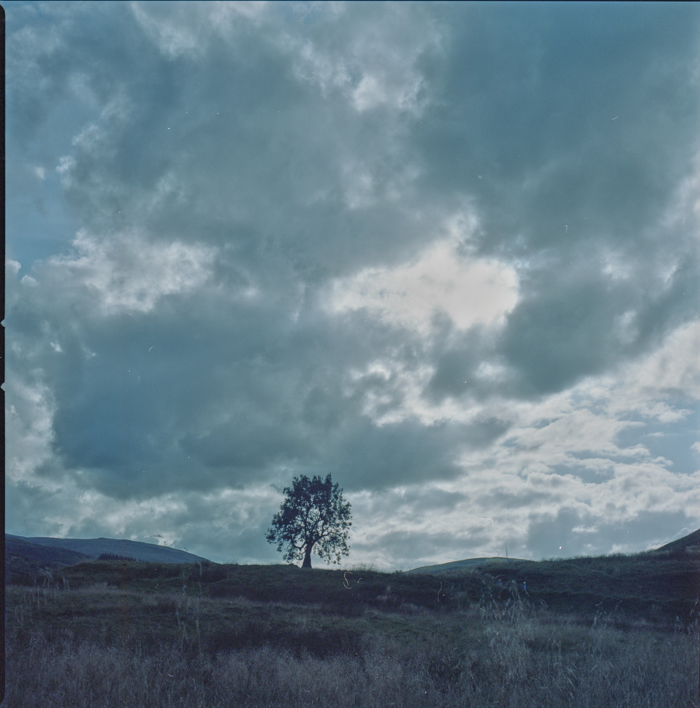

Ard Daraich Anniversary trip
 Sanna Bay, the small isles Fuji X-T2 XF16mm ISO800 f/16 at 1/125s
Sanna Bay, the small isles Fuji X-T2 XF16mm ISO800 f/16 at 1/125s
We took a trip to the Ardnamurchan peninsula for our anniversary and enjoyed the pleasures of that with some photography. The sun shone on the first day, and took a jigsaw puzzle day on the second, giving us time for proper rest and relaxation. We stayed at Ard Daraich, home of the artist Anna Raven and her husband, film-maker Norrie MacLaren. The house and gardens are well known as the former home of Constance Spry, famed as the creator of Coronation Chicken for the Queen. Our accommodation was the Garden Studio, former garage to the larger house and nestled between the house and Anna’s studio which houses a substantial printing press which she uses to create some of her work.
On this trip I finished a roll of Portra 160 in a Hasselblad 503CW and Kodak 400 Tri-X in the amazing little Agfa Isolette. The exposures in those two rolls are included further below.
Bridge over the river Gour, Ricoh GRiii
The house sits on a lane that leads to Ardgour House, an altogether grander holiday destination, beyond our means and expectations. The lane passes over the river Gour by way of this bridge, which lit up in the unexpected sunshine of our first day, throwing reflections and patterns from the cool waters.
 Reflection 1, Fuji X-T2
 Reflection 2, Fuji X-T2
 Reflection 3, Fuji X-T2
 Reflection 4, Fuji X-T2
In the other direction, the lane ends at Loch Linnhe, which like all of Highland Scotland is alive with russets, rubies, rusty maroons, cardinals, carmines and ambers. The beach is striped with sea salad, echoing the leaves on the trees in heralding the fall of summer’s gaudy sparkle.
 Beach salad, Ricoh GR-III
Our too-short sojourn at Ard Daraich was surely a rehearsal for a return to Ardgour and the stunning Ardnamurchan peninsula. A restful reconnaissance, well-earned and thoroughly appreciated as other duties call us back to the routine rumpus of that which pays us. We will be mellow, perhaps, as we savour the memories of the recent weekend.
Hasselblad images
I feel I have to show you some comparatives, starting with this image. Compare it with the first image in this post.

 Beach salad, Hasselblad 503CW
This image is quite different from the russet reds of the digital capture I made at the same time: here, no adjustments were made after scanning other than a slight crop adjustment. I think it’s just as strong in rendering the emotion of the moment. You can almost smell it. This is my favourite image from the roll and one I might print.
 The Frandy Tree, Glendevon, Hasselblad 503CW
This is a famous tree to those who walk near Glendevon, as we did shortly after we got home. We know it as the Frandy Tree, named for the nearby fishery. It stands alone at the foot of Common Hill and strikes one of those poses that looks different at different times and seasons but also from different directions.
You can see some of the digital images captured on the trip are in the previous post, but I also carried my Agfa and will be posting images from that when I can.
| Brand | Type | ISO | Format | Exposures | Camera | Lens |
|---|---|---|---|---|---|---|
| Kodak | T-Max BW Pan | 400 | 120 | 12 | Agfa Isolette I | Agfa Agnar 1:4.5/85 |
| Kodak | Portra | 160 | 120 | 12 | Hasselblad 503CW | Zeiss 80mm F2.8 C |
The Portra was sent to AG Labs 18 October 21 for C-41 processing.
Hasselblad Portra 160 Exposures
| Frame | Image | Aperture | Shutter | Comment |
|---|---|---|---|---|
| 1 | Frandy Tree | f/16 | 1/60s | 18 Sep 21 |
| 2 | f/3.2 | 1/500s | ||
| 3 | f/16 | 1/500s | ||
| 4 | Sheep | f/10.6 | 1/60s | |
| 5 | Sanna, Ardnamurchan Lighthouse | f/13 | 1/15s | 16 October |
| 6 | The Small Isles | f/16 | 1/15s | |
| 7 | Ard Daraich loch | f/18 | 1/8s | 17 Oct |
| 8 | Kara’s composition of 7 | f/22 | 1/6s | |
| 9 (header image) | Beach salad | f/8 | 1/15s | |
| 10 | Jetty stakes | f/22 | 1/8s | |
| 11 | Glen Coe in mist | f/22 | 1/4s | Loch Tula 18 Oct |
| 12 | ditto |
Agfa Isolette Kodak T-Max 400 Exposures
This film was stand developed in Rodinal R09 in August 2022.
| Frame | Image | Aperture | Shutter | Comment |
|---|---|---|---|---|
| 1 | Frandy Tree | f/11 | 1/125s | Glendevon 25 September 21 |
| 2 | Dunning Road from Common Hill climb | f/22 | 1/50 | |
| 3 | Frandy Tree from CH summit | f/22 | 1/50 | |
| 4 | Lower Glendevon Reservoir | f/16 | 1/50s | |
| 5 | Lochans on Common Hill | f/4.5 | 1/200s | |
| 6 | Wispy grass | f/4.5 | 1/200s | |
| 7 | Small isles | f/22 1/50s | 16 Oct sanna | |
| 8 | House on Sanna beach | f/16 | 1/50s | |
| 9 | Phone box and coo | f/8 | 1/50s | |
| 10 | Jetty posts | f/11 | 1/50s | 17 Oct Ard Daraich |
| 11 | Twat, scrolled by | |||
| 12 | Loch and jetty posts | f/16 | 1/50s |